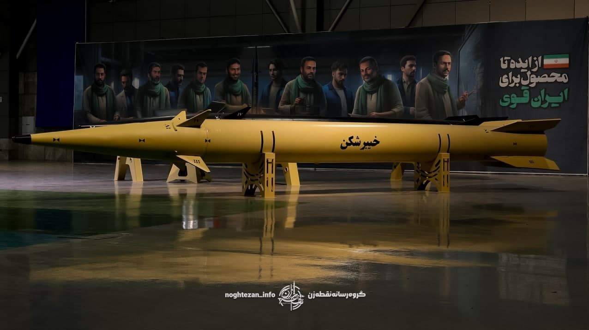
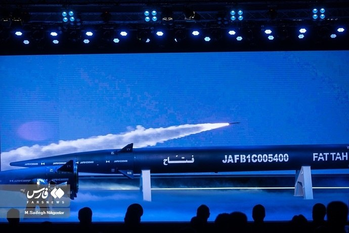
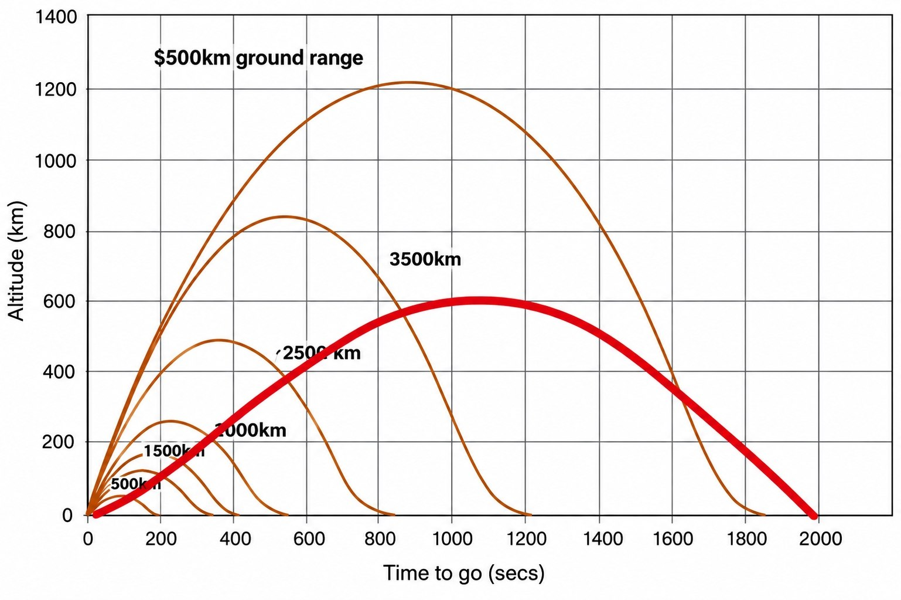

BALLISTIC SYSTEM
SYSTEM 001
خیبرشکن
معرفی عمومی سامانه خیبرشکن و بررسی ویژگیهای اعلامشده درباره طراحی و ساختار آن.
مجموعهای برای معرفی عمومی سامانههای موشکی، فناوریهای دفاعی و اطلاعات تاریخی مرتبط.
مشاهده آرشیوMilitary Archive مجموعهای اطلاعاتی با هدف معرفی عمومی سامانههای موشکی و فناوریهای دفاعی است. اطلاعات این مجموعه با تأکید بر تفکیک مشخصات تأییدشده از گزارشهای غیررسمی ارائه میشوند.

BALLISTIC SYSTEMمعرفی عمومی سامانه خیبرشکن و بررسی ویژگیهای اعلامشده درباره طراحی و ساختار آن.

MISSILE SYSTEMمعرفی عمومی موشک فتاح و فناوریهای اعلامشده در گزارشهای مربوط به آن.
 SOLID FUEL SYSTEM
SOLID FUEL SYSTEM
معرفی سامانه سجیل، ساختار کلی دومرحلهای و فناوری پیشران سوخت جامد آن.

در این نسل از کلاهک سهمخروطی (TRICONIC) استفاده شده است. این طراحی به حفظ تعادل موشک در مرحله پایانی پرواز کمک میکند. شکل بالکهای کنترلی آن نیز از ویژگیهای ظاهری مورد توجه است.
در این نسل، شکل کلاهک به یک مخروط کشیده تغییر کرده است. هدف از این تغییر، کاهش مقاومت هوا و حفظ سرعت بیشتر عنوان شده است. برخی گزارشها برد حدود ۱۸۰۰ کیلومتر را برای این نمونه مطرح میکنند.
در برخی گزارشها به نمونهای با حسگر اپتیکی اشاره شده است. این حسگر برای دریافت اطلاعات تصویری به کار میرود.
اطلاعات رسمی و تأییدشدهای درباره ترکیبات داخلی کلاهک منتشر نشده است. برخی گزارشها به استفاده احتمالی از مواد پرانرژی اشاره دارند.
گزارشهایی درباره امکان توسعه نسخههای متفاوت کلاهک این سامانه منتشر شده است؛ اما جزئیات آنها بهطور مستقل تأیید نشدهاند.

یکی از ویژگیهای مطرحشده درباره فتاح، استفاده از پیشران سوخت جامد است. در گزارشهای منتشرشده، به فناوری تغییر جهت نیروی رانش نیز اشاره شده است.
فتاح بهعنوان سامانهای با طراحی متفاوت معرفی شده است. شکل بدنه و بخش سرجنگی آن از جمله ویژگیهایی هستند که در تصاویر منتشرشده مورد توجه قرار گرفتهاند.
در معرفی این سامانه به قابلیت مانور اشاره شده است؛ با این حال، جزئیات عملکرد و میزان اثربخشی این قابلیتها بهطور مستقل تأیید نشدهاند.
سجیل یکی از سامانههای موشکی بالستیک معرفیشده در ایران است. این موشک به دلیل استفاده از سوخت جامد و ساختار دومرحلهای، از سامانههای شناختهشده این خانواده محسوب میشود.
یکی از ویژگیهای اصلی سجیل، استفاده از سوخت جامد است. این فناوری در طراحی موشکهای بالستیک اهمیت زیادی دارد.
سجیل دارای ساختار دومرحلهای است؛ یعنی در طراحی آن دو بخش پیشران در نظر گرفته شده است. این ویژگی از مشخصات عمومی اعلامشده درباره این سامانه است.
درباره برد سجیل ارقام مختلفی در منابع عمومی منتشر شده است. این ارقام باید با توجه به منبع و اعتبار گزارش بررسی شوند و نباید همه آنها را مشخصات قطعی دانست.
مسیر پرواز موشکهای بالستیک در منابع عمومی معمولاً بهصورت نمودارهای ارتفاع و زمان نمایش داده میشود. اطلاعات منتشرشده درباره مسیر پرواز سجیل نیز نیازمند بررسی و تأیید مستقل است.

SEJJIL — ARCHIVE IMAGE